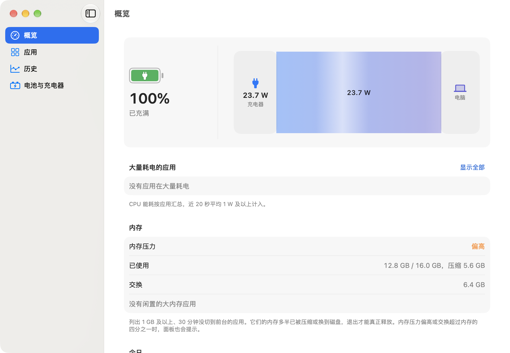
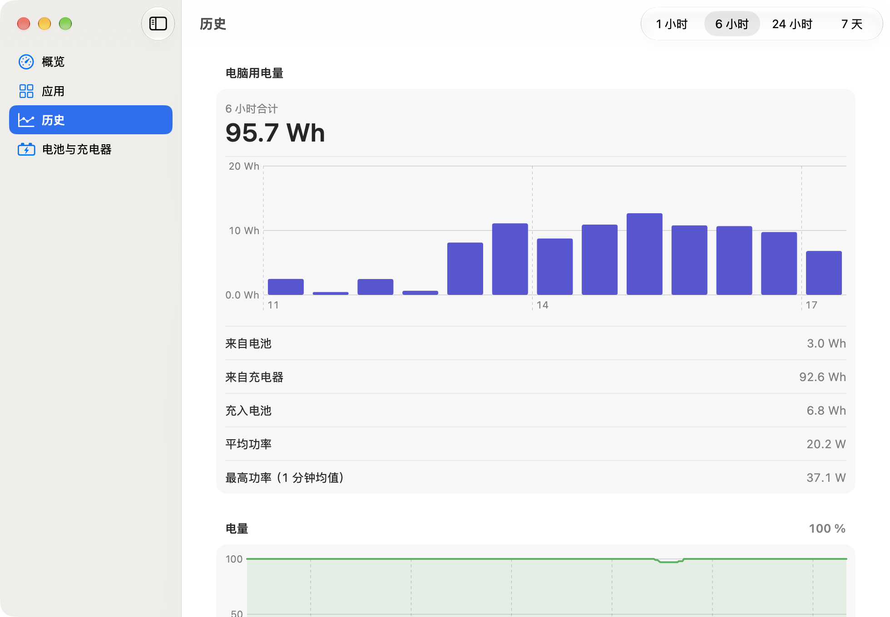

开源的 MacBook 功率与能耗监视器
电从哪来，用到了哪。
充电器、电池、电脑，每 2 秒一次，就在菜单栏。
开源的 MacBook 功率与能耗监视器
充电器、电池、电脑，每 2 秒一次，就在菜单栏。

Rill 是免费开源的 MacBook 菜单栏工具。它实时显示充电器送进多少瓦、电脑用掉多少瓦、电池充入或放出多少瓦，列出最耗电的应用，盯着内存压力，并保留 7 天历史。它只读 macOS 本来就提供的数据，不需要特殊权限，只在你检查更新时联网。
不用打开活动监视器，也不用猜。
插电时显示充电器输入，用电池时显示放电功率。
充电器、电池、电脑之间怎么分电，带子粗细就是瓦数。
按应用统计能耗、CPU 和内存，标出未响应的应用，可直接退出。
内存压力和交换一目了然。内存不够时，列出闲置又占内存的应用。
每天用了多少电，功率、电量和电池温度的曲线。
健康度、循环次数、充电器额定功率与协商电压，以及支持的 PD 档位。
1 小时到 7 天，按段汇总用电量，悬停看每一段。

在终端里运行一行命令，脚本会校验签名后装进「应用程序」。
curl -fsSL https://raw.githubusercontent.com/chengffei/rill/main/install.sh | bash也可以下载磁盘映像手动安装，步骤如下。
打开下载的 dmg，把 Rill 拖到 Applications 文件夹。
双击 Rill，系统提示无法验证开发者，点「完成」。
「系统设置 › 隐私与安全性」拉到底部，点「仍要打开」。
需要 macOS 26 或更高、带电池的 Apple 芯片 Mac。菜单栏图标没出现时，可能被菜单栏管理工具收起了。
安装和使用中最常被问到的几件事。
装上 Rill。菜单栏直接显示实时瓦数，面板把它拆成充电器输入、电池充放电和电脑本身的用电，每 2 秒更新。
不需要。它读的是 macOS 向所有应用开放的功率传感器与电池数据，以及你自己进程的能耗。
不能。Rill 只显示正在发生什么，不改变 Mac 的充电方式。
它不做所谓的内存清理。内存紧张时，它列出占用大、30 分钟没用过的应用，由你决定是否退出。退出才是真正释放内存的办法。
免费，并以 GPL-3.0 协议开源。
Rill 没有经过 Apple 公证。用终端命令安装就不会提示；或者先打开一次并关掉提示，再到「系统设置 › 隐私与安全性」点「仍要打开」。
不会。历史只存在你的 Mac 上，保留 30 天。只有你点「检查更新」时才联网。